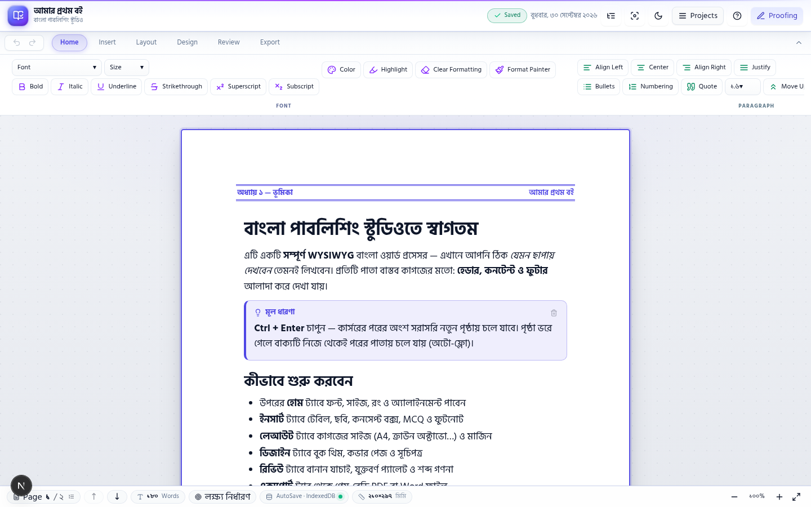
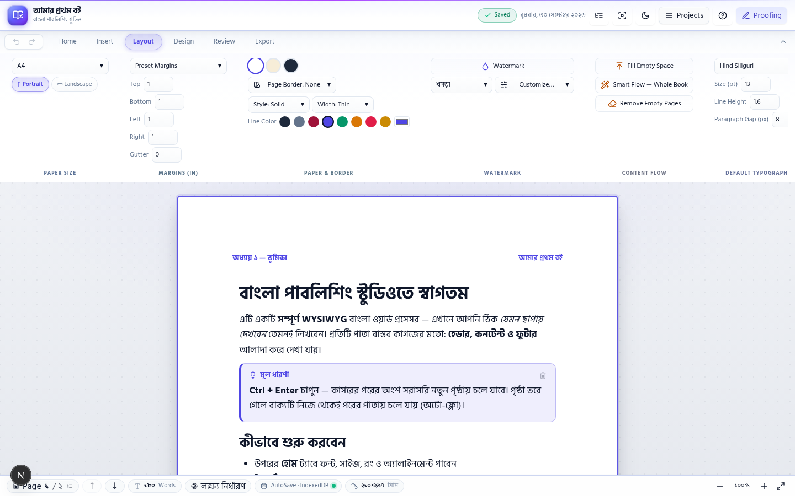
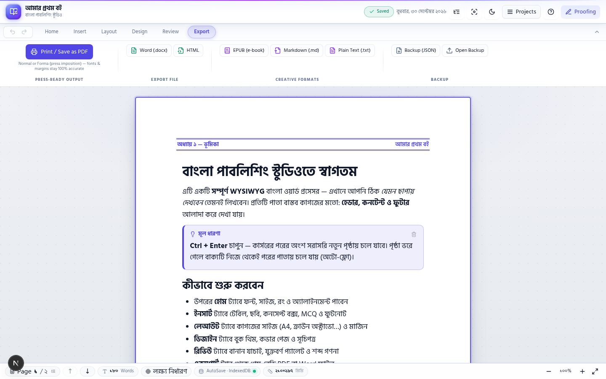

Section 01
Project at a Glance এক নজরে প্রজেক্ট
Project Title
Bangla Publishing Studio
Scientific Field
Engineering & Innovation
Group / Category
Group C (18 years or above)
Project Type
Individual
Participant
Topu Biswas
Institution
University of Rajshahi, Rajshahi Division
Status
Working prototype, live & open-source
Keywords
Bengali publishing · WYSIWYG · Farma imposition · PWA
Section 02
Project Abstract সারসংক্ষেপ
Bangla Publishing Studio is a free, web-based WYSIWYG (What-You-See-Is-What-You-Get) word processor and book designer built specifically for Bengali-language publishing. While global tools such as MS Word or Adobe InDesign treat Bengali books as an afterthought, professional Bengali typesetting still depends on costly desktop software and skilled operators that most teachers, rural writers and small publishers cannot afford. This project removes that barrier completely: a writer opens a browser, starts writing on true print-sized pages (A4, Letter, Legal, Demy, Crown and other industry-standard sizes), and produces press-ready output without installing anything or paying anything.
The platform implements a real pagination engine, page headers and footers, images with text wrapping, tables, icons, shapes, MCQ/exam boxes for coaching-centre textbooks, and Bengali fonts (Kalpurush, SolaimanLipi, Siyam Rupali, Hind Siliguri) with conjunct-safe typography. Its most distinctive capability is Farma export — the signature-imposition print format used by Bangladeshi printing presses (ছাপাখানা) — which rearranges pages into correct printing signatures so that any local press can directly plate and bind the book. Documents auto-save offline in the browser (IndexedDB) and the app works as an installable PWA even on low-end devices with unreliable internet.
Built with Next.js, TypeScript and TipTap, the working prototype is live and open-source, demonstrating the complete pipeline end-to-end: write → design → paginate → export print-ready PDF, DOCX, EPUB, or Farma imposition.
Section 03
Objectives উদ্দেশ্যসমূহ
1
Democratise Bengali book publishing
Provide a 100% free, zero-setup, browser-based alternative to expensive desktop publishing (DTP) software for teachers, students, rural writers and small publishers of Bangladesh.
2
True WYSIWYG pagination on physical paper
Implement real pagination on industry-standard paper sizes (A4, Letter, Legal, Demy, Crown) with margins and gutter, so that what the writer sees on screen is exactly what the printing press produces.
3
Digitise the traditional press workflow (Farma)
Bring the signature-imposition (ফরমা) process of Bangladeshi printing presses inside a simple one-click export, including binding-safe margins and correct page ordering.
4
Protect and promote Bengali typography
Ensure correct Unicode Bengali rendering, যুক্তাক্ষর (conjunct)-safe fonts, Bengali-first menus and typography controls so non-technical users feel at home.
5
Uninterrupted writing anywhere
Guarantee offline-first operation through a PWA with automatic local backup (IndexedDB) and one-click JSON backup/restore for regions with weak internet connectivity.
6
Open foundation for other languages
Create an open-source architecture that can be extended to other low-resource languages of Bangladesh and the region.
Section 04
Innovation / Novelty উদ্ভাবন
First in-browser Farma imposition exporter
Reproduces the signature page-ordering used by Bangladeshi printing presses — a workflow previously available only through professional DTP operators — directly inside a web page.
Real pagination engine in the browser
Renders true physical pages (A4 to Crown/Demy with margins and gutter) while the writer types — not a print-preview guess — eliminating the screen-versus-print mismatch of ordinary word processors.
Bengali-first user experience
Full Bengali interface, Bengali fonts, conjunct-safe spacing and letter-gap tools, MCQ/exam boxes and coaching-friendly templates designed from the real needs of Bangladeshi teachers.
Zero-setup PWA architecture
Installs like an app, auto-saves offline, runs on low-cost hardware, needs no account or server — the writer's knowledge stays on the user's own device.
One integrated pipeline
Write, design, paginate and export to Farma / print-ready PDF / DOCX / EPUB / HTML in a single tool, replacing three to four separate expensive software products.
Free and open-source
No licence fee, no watermark, no subscription — the complete source code is publicly available for verification and community improvement.
Section 05
Expected Impact সম্ভাব্য প্রভাব
E
Educational impact
Thousands of teachers, tutors and coaching centres can produce their own professional textbooks, question banks and notes at near-zero cost, improving the quality and availability of Bengali learning materials nationwide.
S
Social and cultural impact
Removes the language barrier in technology: a rural writer with only a low-end phone or laptop and an occasional internet connection can write and publish a complete book in Bangla — strengthening Bengali content in the digital age.
$
Economic impact
Cuts pre-press and typesetting costs for small publishers and self-publishing writers; the project has a clear path to a sustainable startup serving Bangladesh's book market.
T
Technical impact
Demonstrates that complex print-industry workflows can be replicated with open web technology, and the architecture can be extended to other Indic languages such as Assamese and Hindi.
G
Efficiency and environmental impact
A digital-first workflow reduces trial prints and paper waste during book production, and encourages systematic digital archiving of manuscripts.
Section 06
How It Works কীভাবে কাজ করে
লিখুনWrite
→
ডিজাইনDesign
→
পেজিনেটPaginate
→
ফরমাFarma Imposition
→
প্রিন্ট-রেডি বইPress-Ready Output
| Layer | Technology | Purpose |
|---|---|---|
| Frontend | Next.js 16, React 19, TypeScript, Tailwind CSS | Fast, reliable, modern interface that runs on any device |
| Editor engine | TipTap / ProseMirror with custom Bengali extensions | WYSIWYG editing, icons, text boxes, image wrapping, MCQ boxes |
| Pagination engine | Custom layout engine with real page metrics | True physical pages, headers/footers, content flow between pages |
| Print pipeline | Dynamic CSS print rules + Farma imposition | Press-ready PDF with signature page ordering and accurate margins |
| Storage | IndexedDB (Dexie) + JSON backup, PWA service worker | Offline autosave, instant restore, installable app experience |
| Hosting | Vercel + GitHub (open-source) | Globally accessible, zero-maintenance delivery |
Section 07
Working Prototype কার্যকর মডেল
The project is not a concept on paper — it is a working software model that runs today in any modern browser. The following screenshots are taken directly from the live prototype.



Section 08
Alignment with ZRF Science Fair 2026 প্রতিযোগিতার শর্ত অনুসারে
✓
Completely original and unique idea
The platform is designed and built from scratch by the participant; source code is publicly available at the GitHub repository for verification. It has not been presented in any previous competition.
✓
Written explanation with images
This Project Summary PDF itself fulfils the required "written explanation with images" — full text plus live screenshots of the working model.
✓
Working model for in-person presentation
The software prototype is the model: it can be demonstrated live, on stage, in front of the judges — writing, designing and exporting a real book in minutes.
✓
Video / PowerPoint presentation capability
A presentation (video or slide form, within 15 minutes) demonstrating the complete workflow is prepared and will be submitted/presented as required by the organisers.
✓
Individual participation (Group C)
The participant is 18 years or above and competes individually; guidance from the Department of ICE, University of Rajshahi is gratefully acknowledged.
Section 09
Future Roadmap ভবিষ্যৎ পরিকল্পনা
Phase 1 — Core platform Completed
WYSIWYG Bengali editor, true pagination, paper sizes, headers/footers, images, tables, MCQ boxes, export to PDF/DOCX/EPUB/HTML, offline autosave and PWA installation.
Phase 2 — Press-grade hardening In progress
Per-page header/footer override, hyperlink preservation in PDF, advanced typography controls (word/letter spacing), cross-page content reflow and production-grade Farma imposition testing with local presses.
Phase 3 — Intelligent assistance Planned
Bengali spelling and grammar checking, AI-assisted proofreading, automatic table of contents and index generation for long books.
Phase 4 — Ecosystem Planned
Template marketplace, collaborative editing, and extension to other low-resource languages of the region.
Section 10
Conclusion উপসংহার
Every year, countless Bengali writers complete their manuscripts but never see them become books — professional typesetting is simply out of reach. Bangla Publishing Studio crosses that final mile: true WYSIWYG pagination, Bengali-first typography and the traditional Farma press workflow combined in one free platform that converts a writer's effort directly into a printed book.